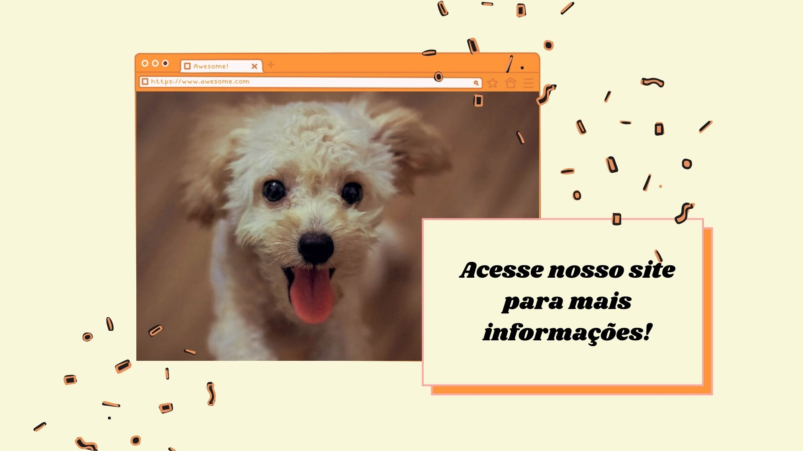

Adote Pets JP

Tem como intuito informar sobre a adoção de animais em João Pessoa.
A adoção é uma atitude nobre, quando você adota um cachorrinho, você está ajudando ele para que ele tenha uma vida de qualidade e feliz
Aqui será possível achar de forma rápida informações sobre quais são as ONG's e Instituições de animais de João Pessoa.
Segundo Pádua Dias:
"Adoção: amor em e ação."
Para adotar um cachorrinho você precisa de:
- Possuir idade mínima a adotante precisa ser maior de 21 anos
- Precisa apresentar o RG
- Apresentar CPF
- Apresentante comprovante de residência recente
- Assinar um termo se comprometendo a cuidar do animal